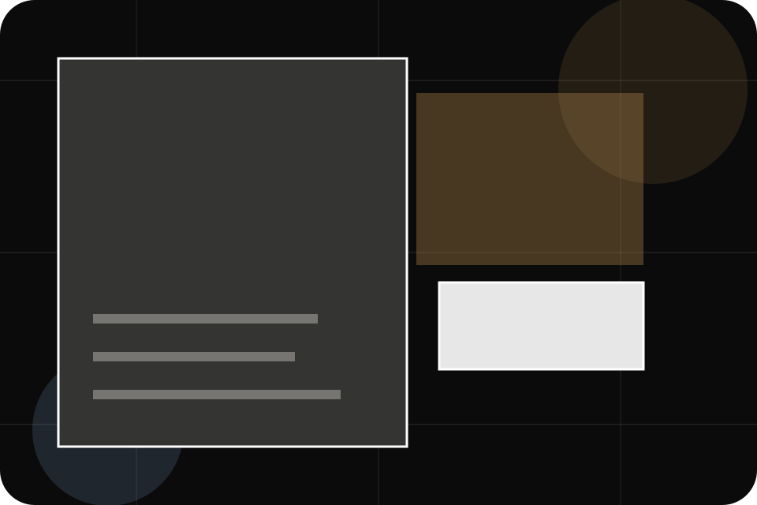
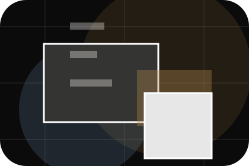
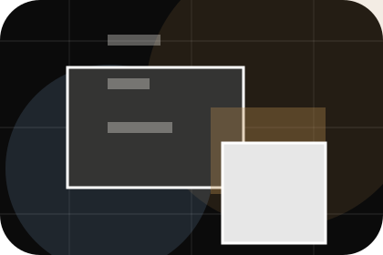
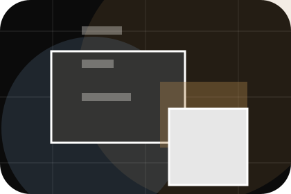

Context
Philosophy gives the page a specific angle instead of repeating the navigation label.
Agency / 01
Agency opens as a clear travel decision hub: what Atlas offers, who it helps, why it matters, and which route to take first.
The first screen combines positioning, proof, primary action, and fast internal navigation, so people can act immediately or compare the rest of the agency route with context.
Immersive trip hero
Select the closest route and Atlas keeps the next step, proof, and follow-up expectation aligned with wanderlust and practical planning.

Agency / 02
Story adds editorial context to the agency route, using the dark destination magazine structure to support wanderlust and practical planning before visitors choose a next step.
Atlas uses journey story cards and focused copy to make the decision easier to scan, aligning the section with wanderlust and practical planning rather than filling space.
Explore AgencyStory gives the page a specific angle instead of repeating the navigation label.
The journey story cards show what to compare, what to avoid, and what matters most for travel, tourism & destination experiences visitors.
The final cue points to a useful internal route so the section keeps the journey moving.
Agency / 03
Philosophy adds editorial context to the agency route, using the dark destination magazine structure to support wanderlust and practical planning before visitors choose a next step.
Atlas uses journey story cards and focused copy to make the decision easier to scan, aligning the section with wanderlust and practical planning rather than filling space.
Explore AgencyPhilosophy gives the page a specific angle instead of repeating the navigation label.
The journey story cards show what to compare, what to avoid, and what matters most for travel, tourism & destination experiences visitors.
The final cue points to a useful internal route so the section keeps the journey moving.
Agency / 04
Team introduces the people, roles, or specialist credibility behind Atlas so the decision feels less anonymous.
The copy ties names, roles, credentials, or availability back to the decision on the page instead of treating profiles as decorative biographies.
Explore Agency

The person, team, or specialist function connected to team is easy to understand.
Agency / 05
Partners gives the proof layer for agency: standards, evidence, and reassurance that make the next decision feel grounded.
Instead of relying on vague claims, Atlas presents visible standards, process cues, and proof artifacts that help travel visitors judge fit.
Explore AgencyVisible proof that helps visitors believe the claims behind partners.
The quality, safety, or operating expectation this section makes explicit.
What becomes clearer before someone decides whether to plan a trip.
Agency / 06
Responsibility adds editorial context to the agency route, using the dark destination magazine structure to support wanderlust and practical planning before visitors choose a next step.
Atlas uses journey story cards and focused copy to make the decision easier to scan, aligning the section with wanderlust and practical planning rather than filling space.
Explore AgencyResponsibility gives the page a specific angle instead of repeating the navigation label.
The journey story cards show what to compare, what to avoid, and what matters most for travel, tourism & destination experiences visitors.
The final cue points to a useful internal route so the section keeps the journey moving.
Agency / 07
Safety adds editorial context to the agency route, using the dark destination magazine structure to support wanderlust and practical planning before visitors choose a next step.
Atlas uses journey story cards and focused copy to make the decision easier to scan, aligning the section with wanderlust and practical planning rather than filling space.
Explore AgencyAtlas structures safety around context, judgment, and a clear next route so visitors can compare the block quickly before they plan a trip.
Plan TripAgency / 09
Trust gives the proof layer for agency: standards, evidence, and reassurance that make the next decision feel grounded.
Instead of relying on vague claims, Atlas presents visible standards, process cues, and proof artifacts that help travel visitors judge fit.
Explore AgencyVisible proof that helps visitors believe the claims behind trust.
The quality, safety, or operating expectation this section makes explicit.

What becomes clearer before someone decides whether to plan a trip.
Travel plans may depend on visas, health rules, weather, operator availability, and insurance terms.